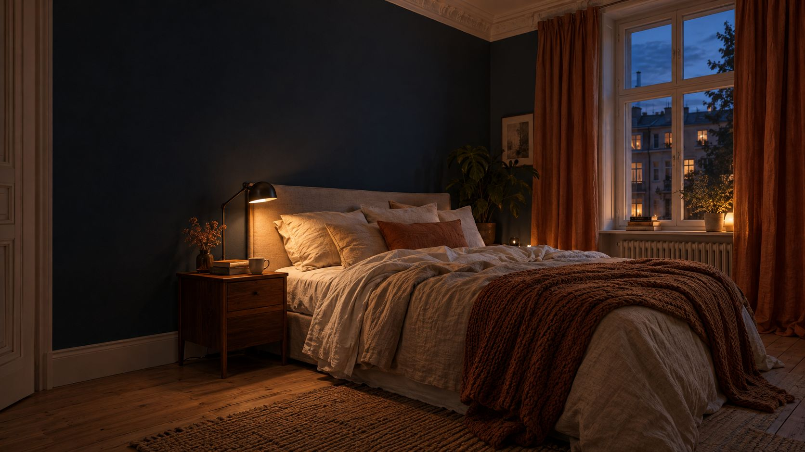

Schlafzimmer einrichten
Ruhig, dunkel und kühl. So wird dein Schlafzimmer ein Raum, in dem du gut schläfst, mit den richtigen Abständen, Farben und Licht.
Plane neben dem Bett und vor dem Schrank etwa 80 cm Platz ein, wähle ruhige Farben und warmweißes Licht mit 2.700 bis 3.300 Kelvin. Zum Schlafen passen 16 bis 18 Grad und 40 bis 60 Prozent Luftfeuchte, Fernseher und Handy bleiben besser draußen.
Die wichtigsten Maße.
Damit du bequem ins Bett kommst und der Schrank aufgeht.
Ein Teppich unter dem Bett sollte links, rechts und am Fußende 50 bis 60 cm hervorschauen. Die passende Größe rechnet der Teppich-Rechner aus. Ob dein Bett ins Zimmer passt, zeigt der Bett-Rechner.
So richtest du ein.
Sechs Schritte für mehr Ruhe.
Das Bett richtig stellen
Mit dem Kopfteil an eine Wand, nicht direkt neben Fenster oder Heizkörper. Probier die Stelle vorher aus, notfalls eine Nacht mit einer Campingmatratze. In kleinen Räumen darf das Bett seitlich an der Wand stehen, wenn du es über das Fußende erreichst.
Ruhige Farben wählen
Weiß und Beige wirken klar, ein dunkles Grün oder Blau geborgen, am besten erst an einer Wand. Pastell wie Hellblau oder Hellgrün mit Weiß wirkt frisch und beruhigend. Knalliges Rot oder Giftgrün meidest du besser. Mehr zur Farbwahl unter Wandfarbe wählen.
Licht in zwei Stufen
Eine gedämpfte Deckenleuchte und Leseleuchten an den Nachttischen, warmweiß mit 2.700 bis 3.300 Kelvin. Praktisch ist ein Schalter fürs Deckenlicht direkt am Bett. Mehr unter Licht planen.
Dunkel und leise machen
Blickdichte Vorhänge halten Straßenlaterne und Morgensonne draußen, Teppiche und dicke Stoffe schlucken Geräusche.
Ordnung hinter Türen
Geschlossene Schränke wirken ruhiger als offene Regale. Ein Bett mit Bettkasten nimmt Bettwäsche und Handtücher auf. Staubsauger und Wäscheständer gehören woandershin.
Bildschirme draußen lassen
Fernseher, Laptop und Handy stören beim Einschlafen. Lesen ist erholsamer als Surfen.
Dazu 40 bis höchstens 60 Prozent Luftfeuchte. Ein Thermometer mit Hygrometer zeigt dir beides.
Kleines Schlafzimmer.
- Bett
- Ein filigranes Bett mit zierlichen Füßen wirkt leichter als ein massives. Mit Bettkasten gewinnst du Stauraum.
- Schrank
- Schiebetüren brauchen keinen Platz zum Aufschwenken.
- Wände
- Helle Farben und große Spiegel lassen den Raum größer wirken. Mehr Tricks unter Kleine Räume größer wirken lassen.
Für besseren Schlaf.
Dunkel, ruhig, gutes Licht. Die Links führen zu einer Suche bei AmazonAnzeige
Häufige Fragen.
Wohin gehört das Bett?
Mit dem Kopfteil an eine Wand, nicht direkt neben Fenster oder Heizkörper. Am Ende entscheiden Raum und Gefühl, probier es aus.
Gehören Pflanzen ins Schlafzimmer?
Wenige vielleicht, aber Vorsicht: Feuchte Erde kann Schimmel begünstigen. Gieß sparsam und lüfte regelmäßig.
Welche Farbe beruhigt am meisten?
Gedeckte Töne wie Beige, Salbei, Hellblau oder ein dunkles Blau oder Grün an einer Wand. Den passenden Ton findest du mit dem Farb-Kombinierer unter Wandfarbe wählen.
Geht das alles zur Miete?
Ja. Vorhänge, Lampen zum Einstecken, Teppiche und ein farbiger Anstrich sind erlaubt. Was beim Auszug gilt, steht unter Schöner wohnen zur Miete.
Quellen.
Alle 3 Quellen anzeigen
- sanier.de: Schlafzimmer einrichten (aktualisiert 11.08.2025) sanier.de
- leinetal24 (dpa): Bitte Abstand halten, Einrichtungstipps fürs Schlafzimmer (06.07.2015) leinetal24.de
- wohnglück: Temperatur im Schlafzimmer wohnglueck.de
Richtwerte, keine Normen. Geprüft am 31.10.2026.